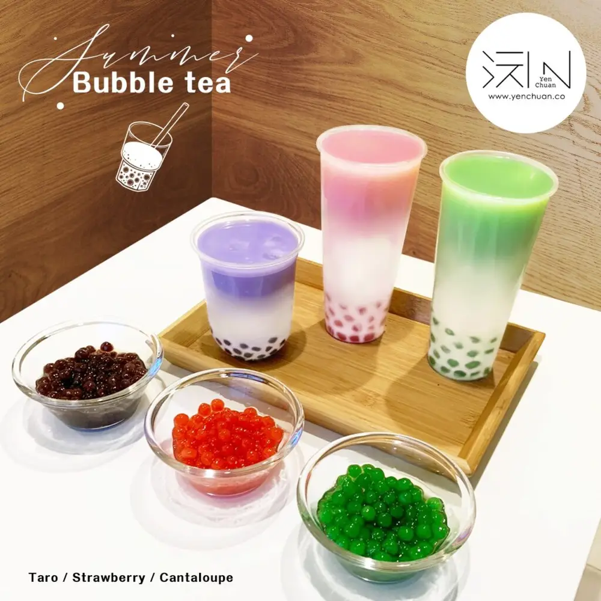
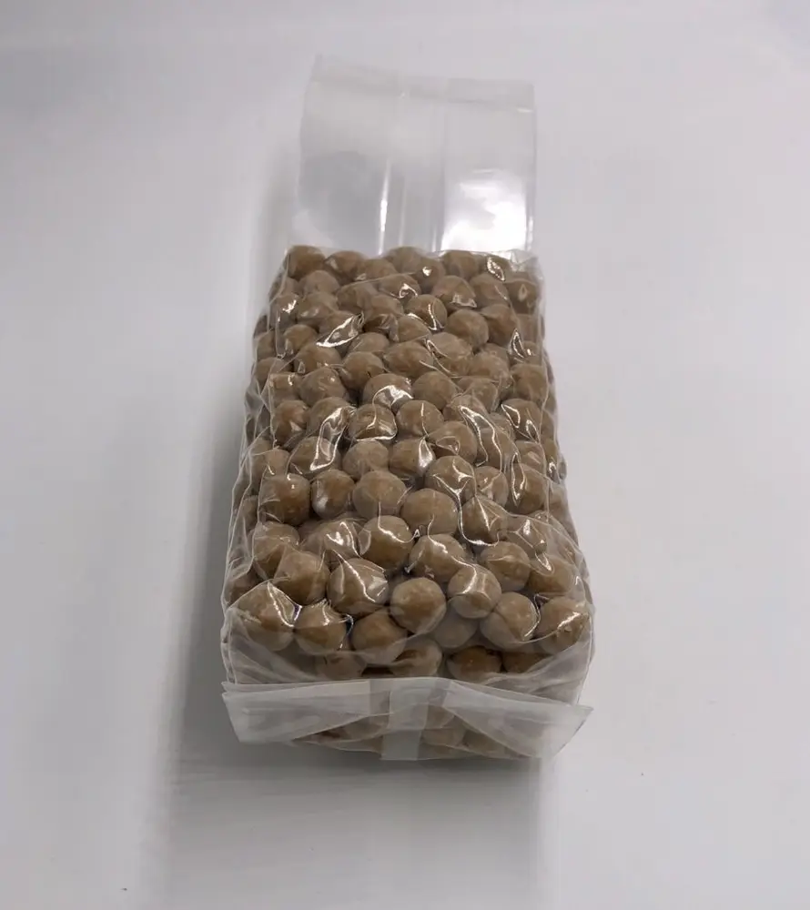
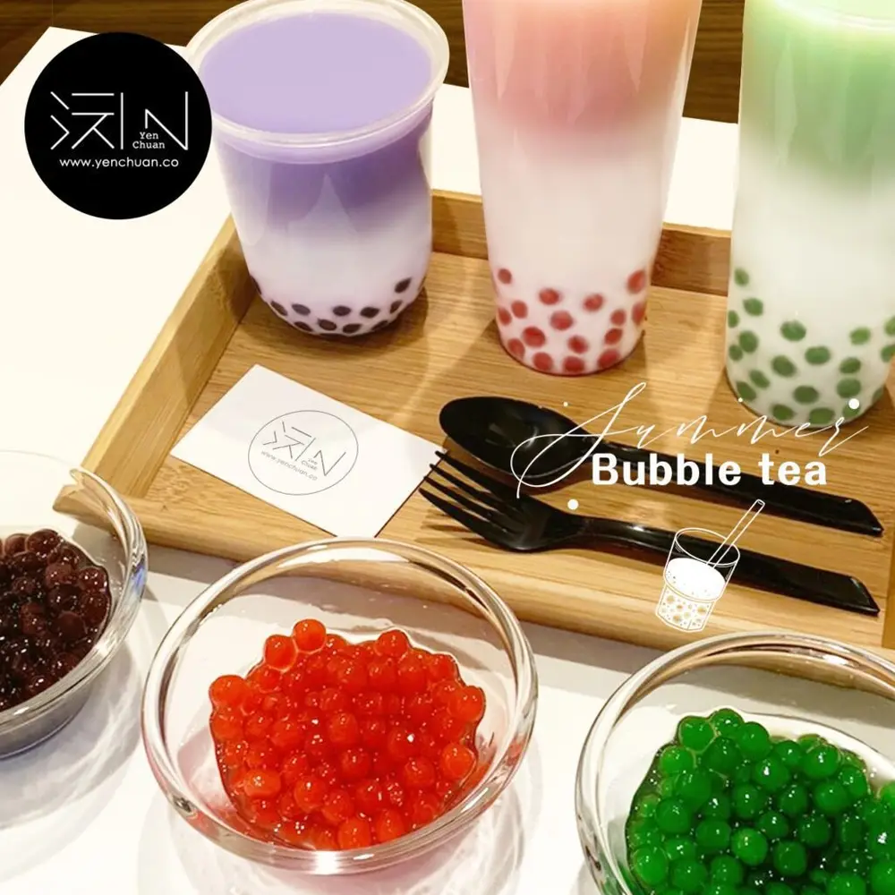

Articles / Tips & trends
Colourful custom tapioca pearls!
2020-08-06 · New products, News


When people talk about bubble tea, the first thing that comes into your mind would be chewy black tapioca pearls in a sea of milk tea, flavoured with delicious brown sugar. Indeed, this is the most classic bubble tea – the one drink that kick-started a whole new craze!
What if you’re tired of the usual black, white and brown? What if you want something new, but don’t want to let go of those chewy, bouncy pearls?
Why not try out our coloured tapioca pearls?
With a range of different colours, these pearls can spice up any drink!
Match up your fruity bubble tea with coloured pearls, or mix them together to form a rainbow of pearls!
Types of pearls
Our pearls are available in different types, suitable for different uses:

Want easy storage and want to cook your pearls to perfection?
Our dried tapioca pearls is your best choice!
Aside from bulk packaging, we can customize small packaging for you too!

Interested in cooking your own pearls but worried about preservatives?
Try our frozen dried tapioca pearls, guaranteed no preservatives!
Now available in bulk packaging!

Craving a quick bubble tea and can’t bother to cook your pearls?
Pop a pack of our instant tapioca pearls into the microwave!
Much like frozen pearls, these instant pearls have no preservatives too!
Now in frozen and room temperature forms!

What colours are available?
Aside from the classic black, brown and white, our pearls are also available in these colourful variants:
…And more!
Interested in our tapioca pearls? Want more colours?
Drop us a message and let us know what you need!